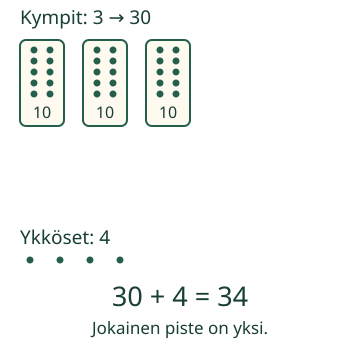

<link rel="stylesheet" href="lesson.css">

<section data-teaching-step="1" data-lesson-role="teaching-step">
<section class="lesson-intro"><h2>Mitä luvun numerot kertovat?</h2><p>Aavan lapussa lukee 34. Hän ottaa kolme kymmenen nippua ja neljä irtokappaletta.</p><p><strong>Luen luvusta kymmenet ja ykköset.</strong></p></section>
</section>


<section><section data-teaching-step="2-1" data-lesson-role="teaching-step"><h2>Yksi nippu on kymmenen</h2><p>Sido kymmenen tikkua yhdeksi nipuksi. Nippu on yksi kymppi. Irtotikku on yksi ykkönen.</p><figure data-lesson-role="worked-example"><figcaption>Jokainen piste on yksi. Kehyksessä on kymmenen.</figcaption></figure><h3>Luku 34</h3><p><strong>3 kymppiä on 30.</strong> Neljä ykköstä lisää: 34. Numero 3 on kymmenten paikalla. Se tarkoittaa tässä kolmeakymmentä, ei kolmea.</p><h3>Luku 40</h3><p>Neljä kymppiä on 40. Irtokappaleita ei ole. Siksi ykkösten paikalle tulee <strong>0</strong>. 40 ei ole sama määrä kuin 4.</p></section>
<section data-teaching-step="2-2" data-lesson-role="question"><section data-lesson-role="question"><h3>Pysähdy</h3><p>Jos numerot vaihtavat paikkaa, tuleeko 34:stä sama määrä?</p><details data-lesson-role="answer"><summary>Paljasta ajatus</summary><p><strong>43 on 40 ja 3.</strong> Se on eri määrä.</p></details></section></section></section>


<section data-place-two hidden><section data-teaching-step="3-1" data-lesson-role="teaching-step"><h2>Katso numeroiden paikat</h2><label>Esimerkki<select data-model-case><option value="thirtyfour">34</option><option value="forty">40</option><option value="fortythree">43</option><option value="twentytwo">22</option><option value="six">6</option></select></label><div data-model></div><p data-model-caption aria-live="polite"></p></section>
<section data-teaching-step="3-2" data-lesson-role="teaching-step"><section data-practice data-audience-columns><div data-visual-column><h2>Kokoa itse</h2>
<label>Tilaus<select data-task><option value="thirtyfour">34</option><option value="fortythree">43</option><option value="forty">40</option><option value="twentytwo">22</option><option value="six">6</option></select></label>
<p data-target></p>
<div data-build></div></div><div data-response-column><p>Lisää kymppejä ja ykkösiä. Voit myös kirjoittaa ruutuun numeron.</p>
<div class="place-controls"><div><label>Kymppejä<input type="text" inputmode="numeric" maxlength="1" value="0" data-tens></label><button type="button" data-step="tens-minus" aria-label="Yksi kymppi vähemmän">−10</button><button type="button" data-step="tens-plus" aria-label="Yksi kymppi lisää">+10</button></div><div><label>Ykkösiä<input type="text" inputmode="numeric" maxlength="1" value="0" data-ones></label><button type="button" data-step="ones-minus" aria-label="Yksi ykkönen vähemmän">−1</button><button type="button" data-step="ones-plus" aria-label="Yksi ykkönen lisää">+1</button></div></div>
<label><input type="checkbox" data-values> Näytä myös määrät lukuina</label>
<p><button type="button" data-action="check">Tarkista</button> <button type="button" data-action="clear">Alkuun</button></p>
<p data-feedback role="status" aria-live="polite"></p>
<details data-lesson-role="hint"><summary>Apua</summary><p>Kaksinumeroisen luvun vasen numero kertoo kympit. Oikea kertoo ykköset. Esimerkiksi 34: 3 kymppiä ja 4 ykköstä. Yhdessä nipussa on aina kymmenen.</p></details></div></section></section></section>


<section data-teaching-step="4" data-lesson-role="teaching-step">
<section><h2>Uusi tilanne: värikynät</h2><p>Rasiassa on 10 kynää. Neljä täyttä rasiaa on 40 kynää. Irtokyniä ei tarvita: <strong>4 kymppiä ja 0 ykköstä</strong>. Rasiaa ei lasketa yhdeksi kynäksi.</p></section>
</section>


<section data-teaching-step="5" data-lesson-role="teaching-step">
<details data-lesson-role="teaching-step"><summary>Lisätutkimus: kaksi kakkosta</summary><p>Luvussa 22 on sama numero kahdesti. Vasemman kakkosen arvo on 20. Oikean kakkosen arvo on 2. Näytä kumpikin määrä. Entä luku 6? Siinä ei tarvita yhtään kymppiä.</p></details>
</section>

<details class="teacher" data-lesson-role="teacher-note"><summary>Opettajalle</summary><p>Vuosiluokat 1–2. Vaadittu M-PLACE-01 antaa kymmenen ykkösen ja yhden kymmenen yhteyden. Tässä opitaan numeroiden paikat kaksinumeroisessa luvussa; ensimmäinen numero ei yleisesti tarkoita kymmeniä kaikissa luvuissa.</p><p>Käytä oikeita nippuja tai kymmenen ruudun kehyksiä. Lue teksti tarvittaessa ääneen. Oppijan ei tarvitse nimetä esineitä tai kuitata puhetta. Piirretyn kehyksen pisteet ja irtopisteet kuvaavat samaa ykkösen yksikköä.</p><p>Ruutuihin sopii yksi numero 0–9. Kokoaja näyttää tavallisen kymppi–ykkösesityksen luvuille 0–99. Muut hajotelmat, kuten 2 kymppiä ja 14 ykköstä, voivat tarkoittaa samaa lukua; ne eivät kuulu näiden ruutujen alueeseen. Vaihtaminen ja uudelleenryhmittely ovat jatkoaihe M-PLACE-03:ssa.</p><p>Malli on erillinen vastauksesta. Mallin tutkiminen ja määrien näyttäminen apuna säilyttävät palautteen. Tilauksen tai vastauksen muutos poistaa sen. Harjoitus ei osoita käsin niputtamista, vapaata perustelua, viivästettyä muistamista tai itsenäistä tai formaalia hallintaa. Ei pisteitä tai henkilötallennusta. Ilman JavaScriptiä kuvat, selitykset ja oikeilla esineillä tehtävä harjoitus säilyvät.</p></details>

<section data-teaching-step="6" data-lesson-role="teaching-step">
<section><h2>Lopuksi</h2><p>Miksi 40:ssa on nolla? Näytä neljän ja neljänkymmenen ero.</p></section>
</section>

